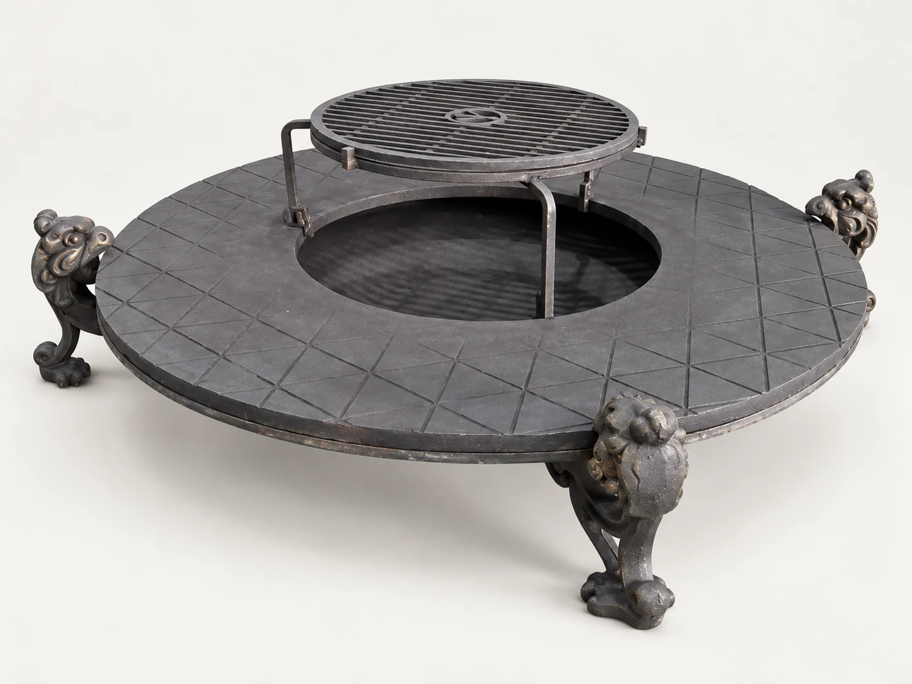
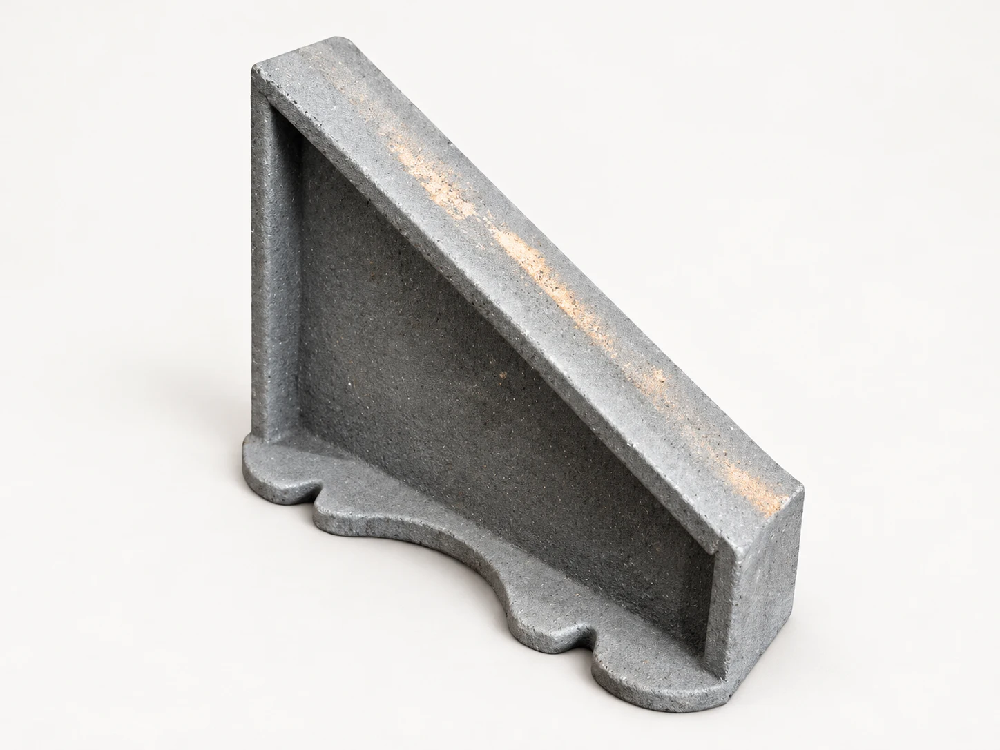
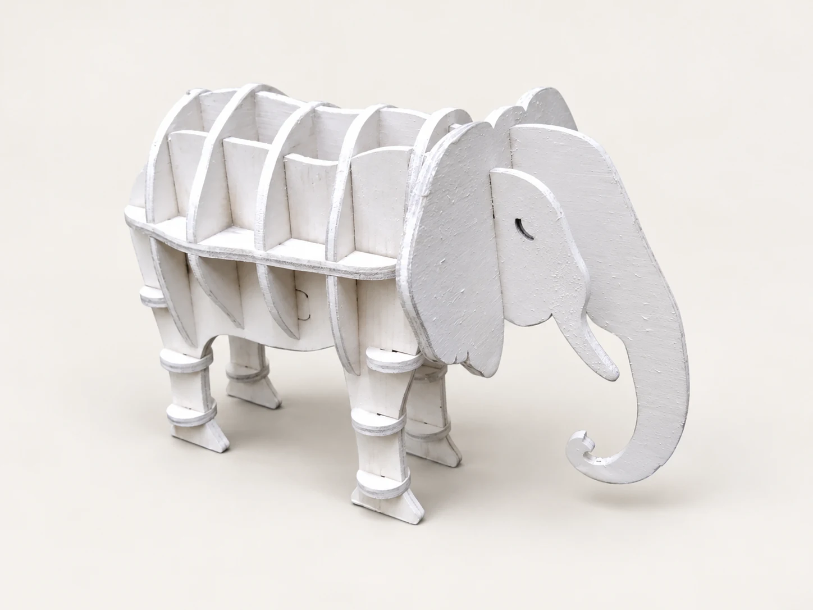
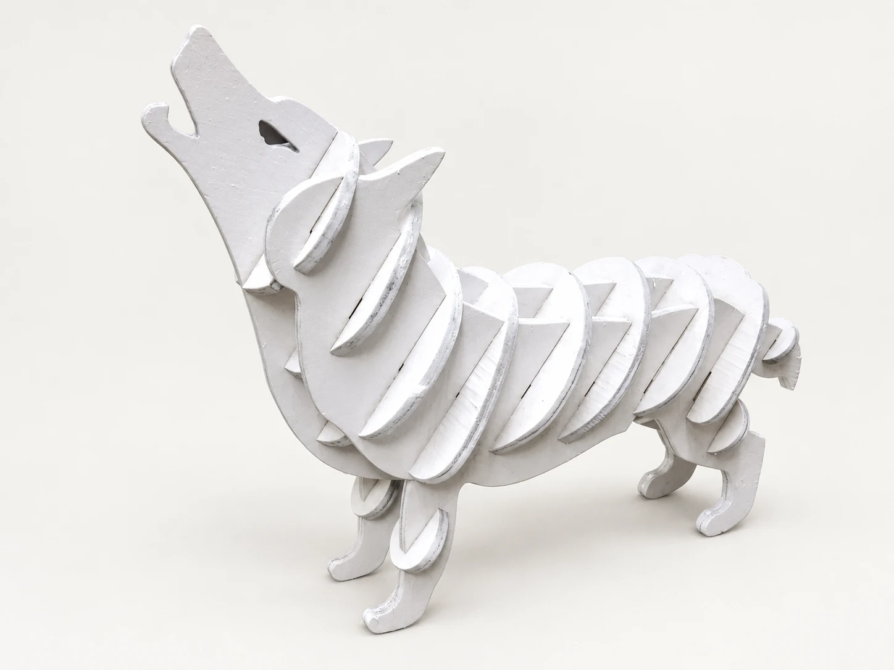
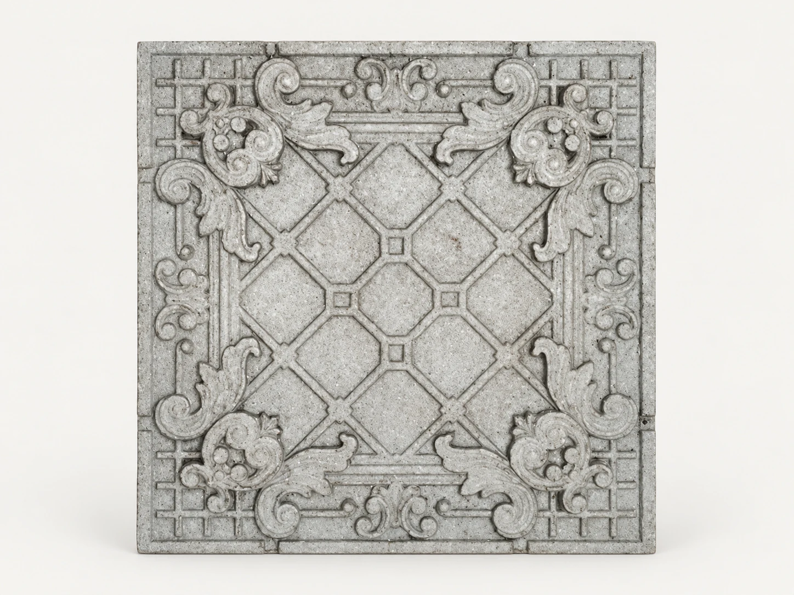
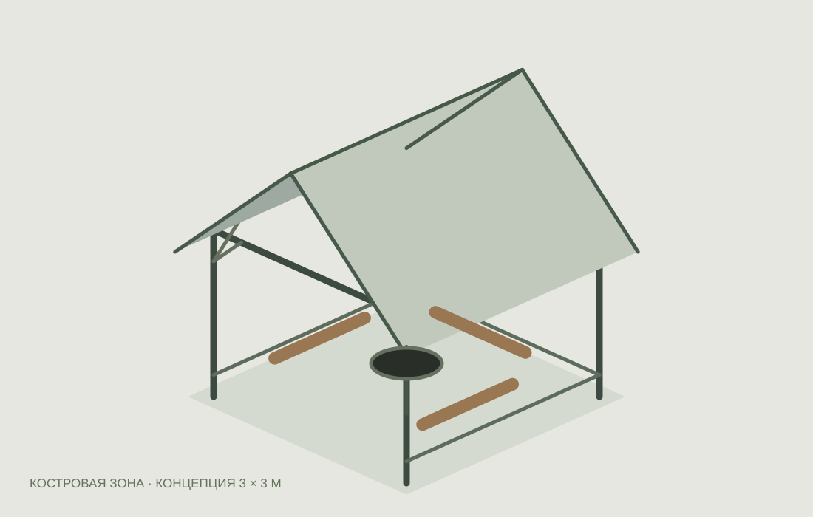

Под заказ
Под заказКаталог
Каталог изделий из чугуна и металла
Чаши и мангалы, чугунные печи, художественный декор и литьё на заказ. Посмотрите фотографии, выберите пример исполнения и обсудите с нами изготовление.
12 позиций
Под заказ Под заказ
Под заказКостровые чаши
Чаша на фигурных опорах
Литая пластика для пространства вокруг огня.
Стоимость по запросуПодробнее
 Обсудить изготовление
Обсудить изготовлениеПечи и изделия из чугуна
Чугунная печь
Литые детали, собранные в законченное изделие.
Стоимость по запросуПодробнее
 По вашей документации
По вашей документации
По согласованиюКомплектующие для костровых чаш
Кольцо-столешница с решёткой
Дополнение к чаше для пространства вокруг огня.
Стоимость по запросуПодробнее

Под заказКостровые чаши
Литая подставка под чашу
Отдельная деталь вашего комплекта.
Стоимость по запросуПодробнее
 По эскизу
По эскизуМодельная оснастка
Оснастка и художественное литьё
От формы до выразительной детали.
Стоимость по запросуПодробнее

На фото — модельДекор из металла
Декоративная фигура «Слон»
Пазовая модель как основа металлического исполнения.
На фото — модель. Металлическое исполнение обсуждается.
Стоимость по запросуПодробнее

На фото — модельДекор из металла
Декоративная фигура «Волк»
Выразительный силуэт из пересекающихся деталей.
На фото — модель. Металлическое исполнение обсуждается.
Стоимость по запросуПодробнее

По образцу / эскизуХудожественный декор
Декоративные панели с орнаментом
Рельефные элементы по образцу или эскизу.
Пример орнамента. Материал и исполнение согласуются.
Стоимость по запросуПодробнее
 Пример исполнения
Пример исполненияМангалы и изделия для огня
Мангал с художественным рельефом
Декоративные панели в изделии для приготовления на огне.
Стоимость по запросуПодробнее

Проект в разработкеКостровая зона
Беседка с центральным очагом
Наш отдельный проект пространства вокруг огня.
Проект в разработкеПодробнее
По вашему запросу ничего не найдено
Попробуйте другое название или опишите нам свою задачу.